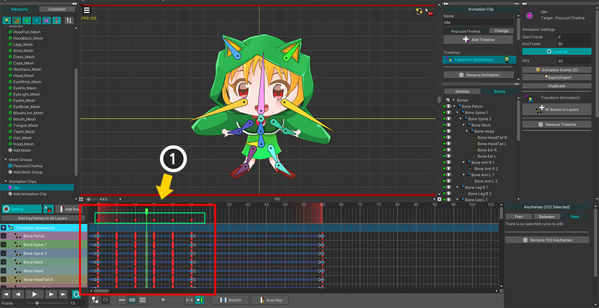
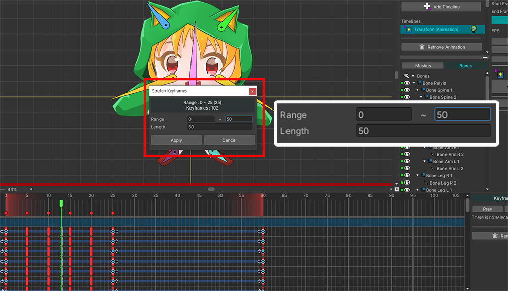
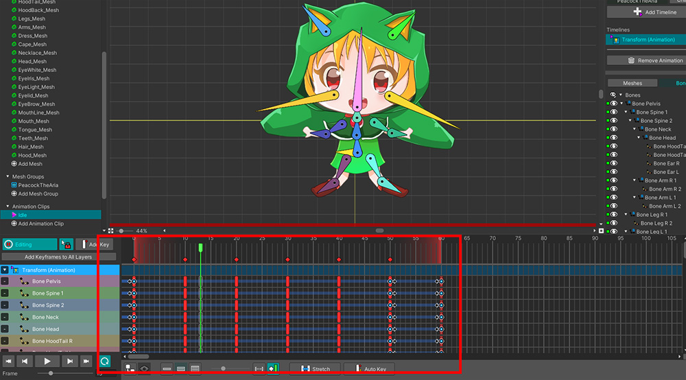

AnyPortrait > マニュアル > キーフレームを増やして再配置
キーフレームを増やして再配置
1.5.0
アニメーションのキーフレームの位置を一定の割合で移動させる機能が「AnyPortrait v1.5.0」に追加されました。
追加された「Stretch」機能を使用すると、キーフレームが配置されている範囲を拡大または縮小して再配置できます。

(1) 一括して位置を修正したいキーフレームを選択します。
共通キーフレームを選択すると、複数のキーフレームを簡単に選択できます。

(2) 「Stretch」ボタンを押します。
(3) 選択したキーフレームの位置情報を変更できるダイアログが表示されます。

このダイアログでキーフレームの位置範囲を変更すると、キーフレームは変更される割合だけ適切に再配置されます。
「Range」または「Length」のいずれかを変更すると、自動的に位置が再計算されます。
値を入力したら、「Apply」ボタンを押してください。

キーフレームが変更された範囲に合わせて適切に配置されていることがわかります。